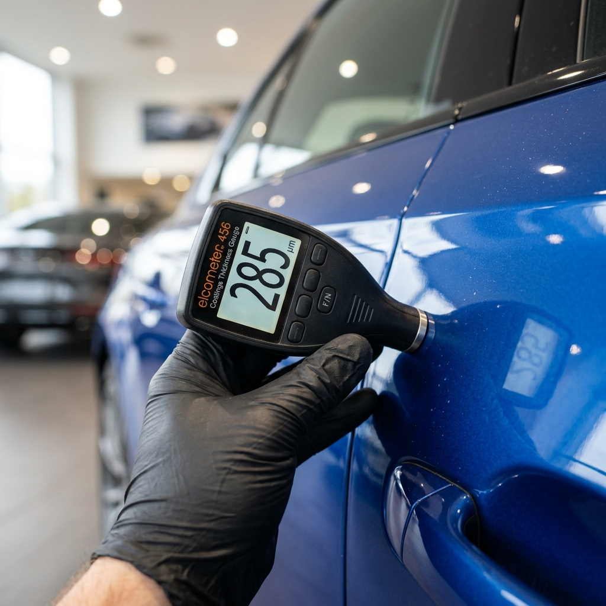
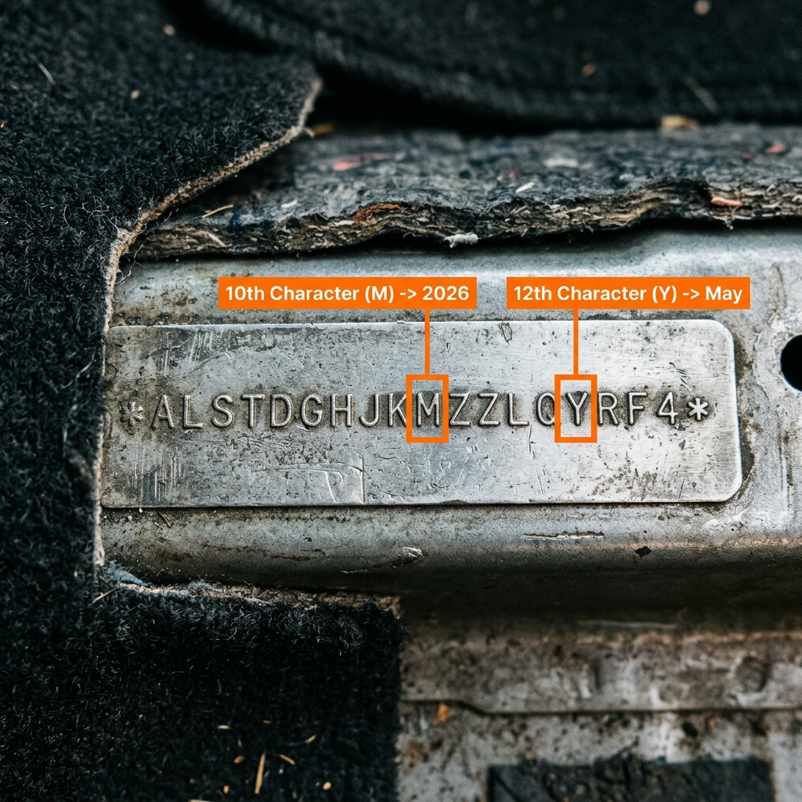
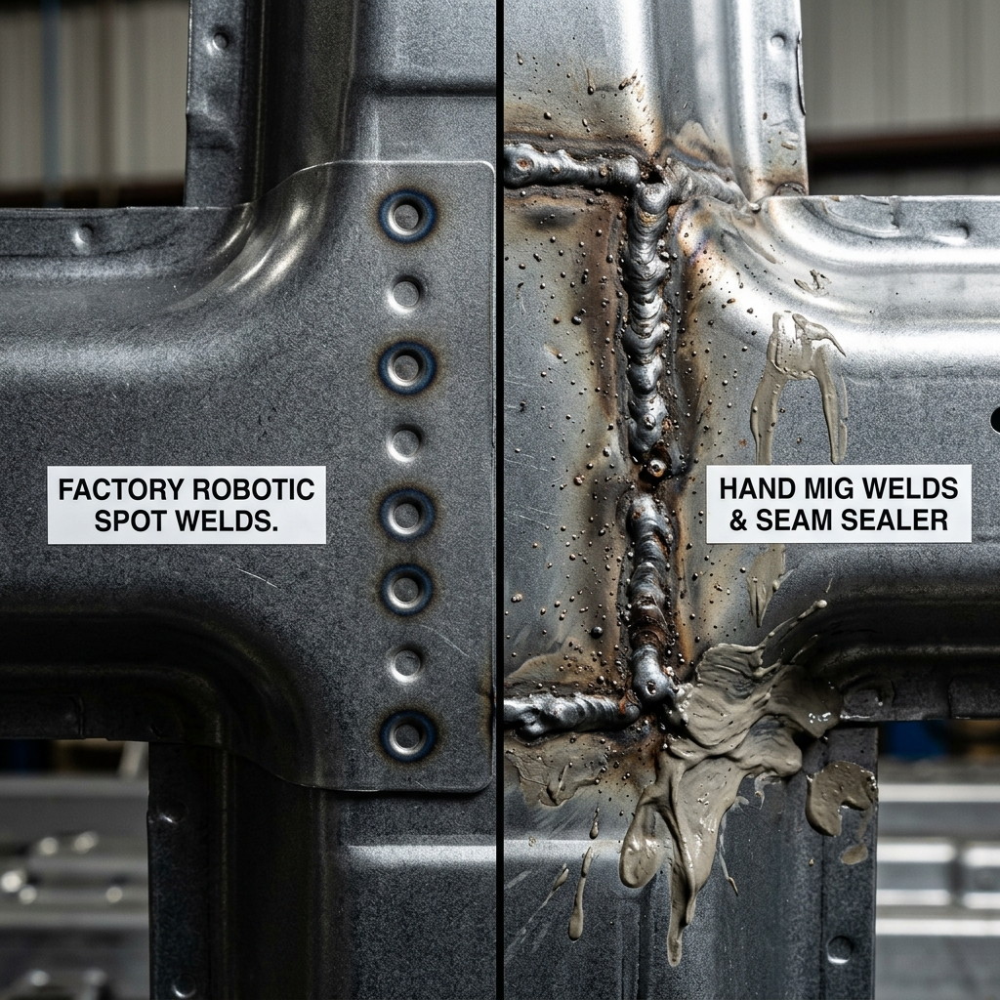

1. Monocoque Safety & The Reality of an Accident Damaged Used Car
The used car market is flooded with vehicles described as "immaculate," "certified," and "bumper-to-bumper original." However, under this shiny paint and polished chrome, many vehicles hide a history of structural damage. Buying an Accident Damaged Used Car is not just a financial risk; it is a major safety hazard. To understand why, we must examine how modern vehicles are built and how they respond to crash impacts.
Modern passenger vehicles use a monocoque (unibody) chassis design. Unlike older body-on-frame designs, where the body sits on top of a rigid steel frame, a unibody structure integrates the body panels, pillars, floor pan, and roof into a single load-bearing shell. In a unibody car, the metal skin is structural.
To protect occupants, engineers design unibody frames with two distinct regions:
- Crumple Zones: Located at the front and rear, these sections are designed to collapse in a controlled manner during a crash, absorbing and dissipating the impact energy before it reaches the passenger cabin.
- The Passenger Safety Cage: A rigid structure formed by the roof, floor, and side pillars (A, B, C, and D pillars) designed to resist deformation and protect the occupants.
When a car is in a major accident, these structures absorb the impact forces. The metal undergoes elastic and plastic deformation. Once steel is bent past its yield point, its crystalline structure changes, causing it to lose its tensile strength.
If a body shop repairs a damaged frame by pulling it back into shape, welding on patch panels, or applying thick layers of body filler, the metal remains weak. In a second accident, these repaired areas will not absorb impact forces correctly. The passenger cage may collapse, and the airbags may fail to deploy at the right time.
As an Automotive Quality professional, my goal is to help you spot these hidden structural repairs. In this guide, I will share the step-by-step diagnostic methods used by mechanical engineers to identify accident damage. If you want a professional, independent audit of a vehicle before buying, the team at CARROBAAR_Drive provides comprehensive, conflict-of-interest-free inspections in Anand, Vadodara, Khambhat, and Ahmedabad.
Replacing deployed airbags and pre-tensioner seatbelts after a major crash is expensive (often costing ₹1 Lakh to ₹3 Lakhs). To save money, some repair shops pack the empty airbag cavities with rags or foam, glue the plastic covers back together, and install resistors on the wiring harness. This tricks the SRS computer into showing a clean dashboard, but the airbags will not deploy in a crash. An OBD2 scanner and a physical inspection of the SRS covers are essential to detect this fraud.
2. Panel Gaps & Alignment: Robotic Precision vs. Manual Body Work
At the factory, vehicle assembly lines use robotic arms to align doors, bonnets, boot lids, and wings. These systems operate with tight tolerances, typically keeping panel gaps within 3.0mm to 4.5mm, with variations of less than 0.5mm along the entire length of the seam.
When a car is damaged in a collision, the underlying mounting brackets, hinges, subframes, or unibody pillars bend. When a panel is replaced or repaired by hand, it is difficult to match these factory clearances.
A. The Visual and Physical Gap Inspection
To check panel alignment:
- Look Down the Panel Lines: Stand at the front corner of the vehicle and look down the side panels toward the rear. The panels should be flush. If a door or wing sticks out or sits deeper than the adjacent panel, it has been misaligned.
- Check Gap Consistency: Examine the gaps on both sides of the car. For example, measure the gap between the bonnet and the front wing on the left side, then compare it to the right side. If one side has a 3mm gap and the other has a 7mm gap, the front structure is misaligned.
- Check for Parallel Seams: The gap between two panels should remain the same width from top to bottom. If a gap narrows or widens along its run, it indicates a twisted panel hinge or a bent frame.
B. Tools for Measuring Gaps
Professional inspectors use plastic gap gauges or caliper cards. You can perform a quick check using a coin:
- A standard 2-Rupee or 5-Rupee coin is approximately 1.5mm to 2.0mm thick. Stack two coins and run them along the gaps between panels.
- If the coins slide smoothly through the top of the gap but bind at the bottom, or if they drop loose, the alignment is uneven.
C. Mechanical Closure and Latching Checks
Open and close every door, the bonnet, and the boot lid.
- The Door Closure Test: A healthy door should close smoothly with a light push, making a solid, muffled thud. If a door requires extra force, scrapes against the strike plate, or makes a loud metallic click, the door frame or hinges are misaligned due to a side impact.
- Bonnet & Boot Latching: The bonnet and boot lid should release cleanly and line up perfectly with their latches. If you have to lift or push the panel sideways to get it to latch, the radiator support frame or rear trunk structure is bent.
| Panel Interface | Factory Specification | Typical Misalignment Signs | Common Cause |
|---|---|---|---|
| Bonnet-to-Fender | 3.0mm – 3.8mm (Parallel) | Wide gap at headlight, narrowing near A-pillar. | Front-end collision; bent radiator support or apron. |
| Front Door-to-Fender | 3.5mm – 4.2mm (Flush) | Door scrapes fender edge when opening; uneven depth. | A-pillar distortion or replaced front wing panel. |
| Front Door-to-Rear Door | 3.8mm – 4.5mm (Straight) | Gaps narrowing at the bottom; doors do not sit flush. | Side-impact crash; B-pillar displacement. |
| Boot Lid-to-Quarter Panel | 3.0mm – 4.0mm (Symmetrical) | Left gap double the width of the right gap. | Rear-end collision; bent rear frame rails or floor pan. |
| Bumper-to-Quarter Panel | 0.5mm – 1.5mm (Tight Fit) | Sagging bumper corners; plastic clips showing gaps. | Broken mounting brackets from low-speed impacts. |
3. Digital Paint Depth Audit: Microns, Substrates, and Body Filler
A digital paint depth gauge (or coating thickness meter) is one of the most reliable tools for detecting accident repairs. While a body shop can smooth out a panel and match the paint color, they cannot match the exact thickness of factory-applied paint.
A. How Paint Gauges Work
A professional paint depth gauge uses two physical principles to measure coating thickness:
- Magnetic Induction: Used for ferrous substrates like steel. The gauge's probe contains a coil that generates an alternating magnetic field. When placed on a panel, it measures the change in magnetic flux density. Since paint, primer, and body filler are non-magnetic, they act as an air gap. The gauge calculates the thickness of this non-magnetic layer down to a single micron (1μm = 0.001mm).
- Eddy Current Testing: Used for non-ferrous substrates like aluminium (often used in the doors, hoods, and wings of premium cars). The probe generates an alternating high-frequency electromagnetic field that induces eddy currents in the aluminium. The gauge measures the electrical impedance changes caused by the distance between the probe and the metal to calculate paint thickness.

Infographic 1: Paint Depth Gauge Readings Across Repair Types
This diagram shows how paint depth reads on original factory paint, cosmetic resprays, and thick Bondo filler layers, helping you identify repair areas.
B. Reading Paint Micron Levels
Factory paint consists of three main layers: an electroplated corrosion-resistant primer (e-coat), a color base coat, and a protective clear coat. The total thickness of these layers typically ranges from 80 to 140 microns on exterior panels.
Here is how to interpret paint gauge readings:
- 80 to 140 microns (Factory Original): Clean, uniform readings across all panels. Some Japanese and Korean models (like Maruti Suzuki and Hyundai) have thinner factory paint (75-100μm), while German models (like Skoda and Volkswagen) are thicker (110-140μm).
- 150 to 250 microns (Respray): Indicates a cosmetic respray, often to cover scratches or minor scrapes. Widespread respraying requires further investigation, but minor paint correction is common on older cars.
- 250 to 500 microns (Minor Body Filler): Indicates the use of polyester body filler (Bondo/putty) to smooth out a dent before repainting.
- 500+ microns (Severe Collision Damage): Indicates a heavy layer of body filler used to repair crumpled sheet metal instead of replacing the panel. These thick sections are brittle, prone to cracking under temperature changes, and suggest a major collision.
| Micron Range (μm) | Millimeter Equivalent | Panel Condition Diagnostic | Vehicle Integrity Risk |
|---|---|---|---|
| 0 – 50 μm | 0.00 – 0.05 mm | Too thin. Heavy machine polishing/wet sanding has worn away the clear coat, or a replacement panel was painted without primer. | High risk of rust and paint failure. |
| 50 – 75 μm | 0.05 – 0.07 mm | Normal only for interior surfaces (engine bay firewall, door jambs, spare wheel well). Too thin for exterior panels. | Normal for interior; warning sign for exterior. |
| 80 – 140 μm | 0.08 – 0.14 mm | Standard factory paint depth. Uniform across all main body panels. | Original Factory Paint. No risk. |
| 145 – 240 μm | 0.145 – 0.24 mm | Cosmetic respray. A second layer of base coat and clear coat has been applied to repair surface defects. | Low risk. Check for overspray and verify the repair was cosmetic. |
| 250 – 500 μm | 0.25 – 0.50 mm | Bondo body filler present. Putty was used to fill dents before painting. | Moderate risk. Minor accident repair. Inspect adjacent structural components. |
| 500 – 1,500+ μm | 0.50 – 1.50+ mm | Heavy body filler. The panel was crushed in a crash and filled with thick putty instead of being replaced. | High risk. Structural damage likely. Paint may crack or peel. Reject panel. |
C. The Systematic Paint Audit Method
To conduct a thorough paint audit, do not rely on a single measurement per panel. Take at least five readings on each panel: near the top, bottom, left side, right side, and center. Widespread variations on the same panel (e.g., 90μm at the top and 450μm near the wheel arch) confirm that the panel has been filled and repainted.
4. Visual Evidence: Spotting Paint Overspray, Tape Lines, and Refinishing Defects
While digital gauges are useful, you can also spot repaint repairs visually. Factory painting is performed in sterile cleanrooms using electrostatic deposition, after which the vehicle is baked at high temperatures.
Aftermarket body shops, however, often spray paint in dust-prone environments and use adhesive tape to mask off areas they want to protect. This leaves behind clear signs of repair.
A. Paint Overspray
Overspray is the fine mist of airborne paint that settles on surfaces not intended to be painted. Look for paint overspray in these key areas:
- Rubber Weatherstripping & Window Seals: Pull back the rubber window seals. If the door was repainted without removing the seals, you will see a fine line of body-colored paint on the black rubber edges.
- Engine Bay Components: Inspect black plastic hoses, wiring harnesses, fuse boxes, and the radiator cover. If the wings were repainted, paint mist often escapes into the engine bay, coating these black plastic parts.
- Wheel Arch Liners: Examine the black plastic liners inside the wheel wells. Widespread overspray here indicates the wings or bumpers were repainted on the car.
- Door Lock Latches: Inspect the silver metal door latches and striker plates. If you see paint on these components, the door has been repainted.
B. Tape Lines and Paint Lines
Run your finger along the edges of panels, fuel filler caps, door handles, and headlight surrounds. Factory paint is smooth and wraps cleanly around every edge.
If a panel has been repainted, you will feel a sharp, raised ridge or a rough, sandpaper-like texture along these edges. This "tape line" is created where the masking tape was applied to protect adjacent panels.
C. Refinishing Defects: Orange Peel, Dust Nibs, and Fish Eyes
Examine the paint under bright, angled light. Look for these common aftermarket paint defects:
- Orange Peel: Refers to a textured finish that resembles the skin of an orange. While some factory paint has minor orange peel, aftermarket painting is often much rougher, creating an uneven reflection. Compare the reflection on the suspected panel with the rest of the car.
- Dust Nibs: Small, raised bumps in the paint caused by dust particles settling in the wet clear coat. Run your hand over the panel; it should feel completely smooth. Tiny bumps confirm the panel was painted outside a cleanroom.
- Fish Eyes: Small circular craters in the paint caused by silicone or oil contamination on the panel before spraying. Factory painting lines do not suffer from this defect.
To detect paint overspray that is invisible to the eye, wrap your hand in a thin plastic grocery bag or a piece of cellophane and run it gently across the paint surface. The plastic will amplify surface roughness, allowing you to feel tiny overspray particles, dust nibs, or rough paint edges that your bare skin would miss.
5. Glass Manufacturing Date Codes: Deciphering the Dots
When a car is in a major accident, the glass windows and windshields often crack or shatter. Replacing damaged glass is standard procedure, but repair shops often use aftermarket glass or glass manufactured in different years. Checking the date codes on every window can help you verify the vehicle's history.
A. Automotive Glass Manufacturer Marks
Every window of a vehicle is stamped with a manufacturer's logo and details, usually in a lower corner. Look for names of major automotive glass suppliers:
- AIS (Asahi India Glass): The dominant supplier for Indian manufacturers like Maruti Suzuki, Hyundai, and Toyota.
- Saint-Gobain Sekurit: Common on European cars (Volkswagen, Skoda, Audi) and Tata Motors.
- Pilkington, Fuyao, AGC, and Vitro: Used by various global automotive brands.
If a vehicle has five windows stamped with "AIS" and one window stamped with an aftermarket brand logo (or a different supplier), that window has been replaced.

Infographic 2: Decoding Glass Manufacturing Date Stamps
Identifying replaced glass by reading the dot-and-digit pattern on the window manufacturer stamps (e.g., Saint-Gobain, AIS, Fuyao).
B. How to Read Glass Date Codes
Automotive glass suppliers print date codes using a system of numbers and dots. The number represents the year of manufacture, and the dots represent the month.
For example, a common system uses a single digit for the year (e.g., "1" for 2021, "2" for 2022, "5" for 2025) accompanied by dots:
- Dots before the digit: Represent the month in the first half of the year. The number of dots decreases from January to June:
•••••• 1= January 2021 (6 dots)••••• 1= February 2021 (5 dots)•••• 1= March 2021 (4 dots)••• 1= April 2021 (3 dots)•• 1= May 2021 (2 dots)• 1= June 2021 (1 dot)
- Dots after the digit: Represent the month in the second half of the year, decreasing from July to December:
1 ••••••= July 2021 (6 dots)1 •••••= August 2021 (5 dots)1 ••••= September 2021 (4 dots)1 •••= October 2021 (3 dots)1 ••= November 2021 (2 dots)1 •= December 2021 (1 dot)
C. Diagnostic Application
All original window glass on a vehicle should be manufactured before or during the year the vehicle was assembled. For example, on a car manufactured in November 2021:
- The glass stamps should show dates from late 2020 or 2021 (e.g.,
•••• 1for March 2021). Widespread agreement across all windows is normal. - If the passenger-side front window stamp reads
•• 23(May 2023), the glass has been replaced. - The Red Flag: If the replacement window coincides with repainted panels or high paint depth readings on the adjacent door and B-pillar, it indicates that the car was in a side-impact collision that shattered the glass and deformed the door sheet metal.
6. Structural Pillars & Welds: Verifying A, B, and C Pillars
If a car suffers a major collision, the damage can extend to the passenger safety cage. To repair this, body shops often cut out damaged sections of the structural pillars and weld in replacement sections from salvage cars. This process, known as "sectioning," is highly dangerous. Spliced pillars cannot match the strength of factory high-strength steel and may collapse in a future crash.
A. Factory Spot Welds vs. Aftermarket Hand Welds
During vehicle assembly, robotic spot welders apply high currents and pressures to fuse sheet metal layers together. This leaves behind factory spot welds—perfectly circular, evenly spaced indentations (5mm to 8mm in diameter) along the metal seams.
When a panel or pillar is replaced in a body shop, the technician must use manual welding (MIG or TIG welding) to join the new metal. Manual welds are irregular, thick, and show lumpy metal beads.
| Inspection Point | Factory Normal State | Repaired / Damaged State | Diagnostic Importance |
|---|---|---|---|
| Pillar Welds (Under Seals) | Uniform, circular, slightly recessed spot welds every 20-30mm. | Missing spot welds, rough MIG beads, or smooth body filler patches. | Critical. Indicates a pillar cut and spliced after a rollover or side impact. |
| Inner Strut Towers | Symmetrical metal stampings with clean, machine-applied seam sealer. | Wrinkled metal, hammer marks, and rough, hand-applied sealant. | High. Front-end crash repair that affects wheel alignment. |
| Trunk Spare Wheel Well | Flat sheet metal floor with neat round drainage grommets. | Crumpled metal folds, cracked sealer, and grey brush marks. | Moderate. Rear-end collision damage that compromises the crumple zone. |
| Firewall Seams | Tight, uniform overlapping joints sealed with clean robot beads. | Thick, messy, uneven caulking; fresh paint mismatched to engine bay. | Critical. Indicates major front collision repair near the engine bay. |
B. Pulling Back the Rubber Weatherstripping
To check the structural pillars:
- Open the door and locate the thick rubber weatherstripping that seals the door opening.
- Grip the rubber and pull it down to expose the metal pinch weld underneath.
- Examine the Welds: You should see a neat row of factory spot welds. If the pinch weld is smooth, or if it shows rough weld lines, grinder scars, or bubbles of body filler, the pillar has been repaired or replaced. Repeat this test on all doors and the trunk opening.

Infographic 3: Factory Spot Welds vs. Aftermarket MIG Welds
A structural comparison showing robotic spot welds versus the rough, lumpy weld beads and uneven seam sealers typical of cheap body shop repairs.
C. The Role of Seam Sealer
Seam sealer is a flexible adhesive used to seal sheet metal joints and prevent moisture from entering. Factory-applied seam sealer is laid down by robots in clean, uniform lines that remain firm but flexible.
Body shop technicians apply seam sealer by hand with a brush or finger. It will look messy, show brush marks, and have an uneven thickness. Press your fingernail into the sealer: if it feels soft and doughy, it was applied recently to cover a repair.
7. Under the Shell: Exposing Chassis Rail and Crumple Zone Damage
The chassis rails (or longitudinal frame rails) are the primary structural members of the vehicle. If the chassis rails are bent or cracked, the car's structural integrity is compromised.
A. Chassis Rails and Front Frame Horns
Open the bonnet and look down behind the radiator. Locate the thick square steel tubes extending from the firewall to the front bumper. These are the front chassis rails.
- Factory chassis rails are straight and smooth. Wavy metal, buckles, kinks, or creases indicate the rails collapsed under a front impact.
- Frame Puller Marks: Crawl beneath the car and check the rocker panels (under the doors). If you see bent metal notches or teeth marks along the pinch weld flanges, the chassis was clamped and pulled on a hydraulic frame straightener. Worn metal that has been bent and pulled back into shape becomes brittle and is prone to cracking.
B. Front impact Bar and Core Support
Inspect the front impact bar (the metal beam behind the bumper cover) and the radiator core support (which holds the radiator and headlights).
- If the radiator support frame is made of fresh black plastic or shows weld marks, it has been replaced after a front collision.
- Check the bolts holding these front panels: rounded bolt heads or scraped paint indicate they were removed for repair.
C. The Spare Wheel Well Test
The boot floor is designed as a rear crumple zone. Open the boot, lift out the floor carpet, and remove the spare tire.
- The metal floor of the spare wheel well should be flat, clean, and painted.
- If you see crinkles in the metal, hammer marks, or rough layers of grey seam sealer, the vehicle was in a rear-end collision. Widespread undercoat spray inside the spare wheel well is a common trick used to mask these repairs.
8. Case Study: Uncovering Frame Repair on a Repainted Pre-Owned SUV
Pre-Owned SUV Structural Inspection Audit
Frame Repair DetectedHyundai Creta 1.6L CRDi (2020 Model)
Vadodara Dealer Stockyard
"Certified Non-Accidental, Original Paint, Bumper-to-Bumper Clean"
Re-welded passenger-side C-pillar, frame pulling clamp marks on rocker sills, and rear trunk pan crinkles covered with black undercoat.
During our 240-point inspection, our lead engineer Bhavya Rambhia scanned the panels. The passenger-side doors showed paint depth readings of 420-560 microns. Upon pulling back the door weatherstripping on the passenger side C-pillar, we found the factory round spot welds were missing, replaced by messy hand MIG welds and thick, brush-applied seam sealer that was still soft. Crawling beneath, we identified heavy horizontal teeth scars on the pinch welds where a hydraulic frame puller had gripped the chassis to straighten a side-impact crush. The spare wheel well showed wavy sheet metal and unpainted hammer repair scars, hidden under a fresh coating of rubberized sound deadening spray.
The dealer offered the vehicle at ₹9.8 Lakhs. Armed with our detailed inspection report containing photographic evidence of the frame alignment clamps, missing spot welds, and Bondo paint depths, the client immediately rejected the vehicle. The repair cost to restore the structural strength of a compromised passenger cage would exceed ₹2.5 Lakhs, and the car would still fail to protect occupants in a secondary rollover or side-impact crash. CARROBAAR_Drive saved the client from a financial disaster and a severe safety risk.
9. Step-by-Step Accident Repair Inspection Checklist
Use this interactive checklist during your next inspection. Check off each step as you complete it.
6 Vital Collision Repair Checks
Verify these 6 key areas to ensure the used vehicle is structurally safe and free of accident history.
10. Structural vs. Cosmetic Repair Cost & Depreciation Guide
Not all repairs affect a vehicle's value in the same way. A cosmetic respray to fix a bumper scrape is minor, whereas a repaired structural chassis rail severely impacts both safety and value.
The table below compares the estimated repair costs and depreciation impact of cosmetic vs. structural damage:
| Damage Category | Typical Components Affected | Estimated Repair Cost (OEM Quality) | Market Depreciation Impact | Safety & Alignment Risk |
|---|---|---|---|---|
| Cosmetic Minor | Bumpers, door mirror caps, wheel arches (scrapes). | ₹3,000 – ₹7,000 per panel | 0% to 5% reduction | Negligible. No structural impact. |
| Cosmetic Major | Bonnet, doors, boot lid (dents requiring resprays). | ₹8,000 – ₹15,000 per panel | 5% to 10% reduction | Low. Check that the inner panels are undamaged. |
| Structural Medium | Suspension aprons, bolt-on radiator support frames. | ₹30,000 – ₹80,000 | 15% to 25% reduction | Moderate. Can cause uneven tire wear and alignment issues. |
| Structural Severe | Longitudinal chassis rails, A/B/C pillars, rocker panels. | ₹1,500,000 – ₹3,50,000+ | 35% to 50% reduction | Critical. Vehicle is unsafe. High risk of structure collapse in a future crash. Reject vehicle. |
11. Frequently Asked Questions
Don't Risk Your Safety: Book a Professional Pre-Purchase Audit
Avoid buying an accident-damaged used car with hidden structural frame welds or odometer fraud. Book an independent Pre-Purchase inspection with CARROBAAR_Drive. Our automotive engineers will provide a detailed 240-point report within 3 hours.